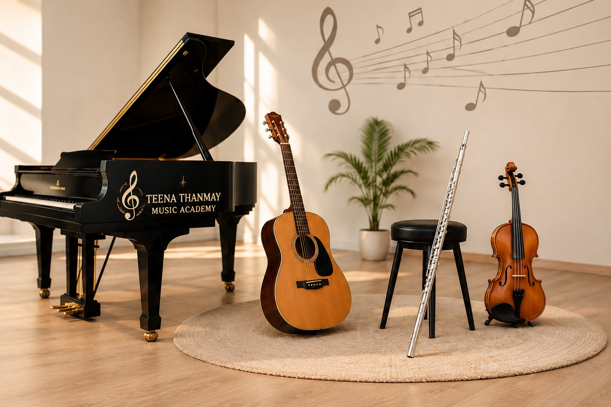
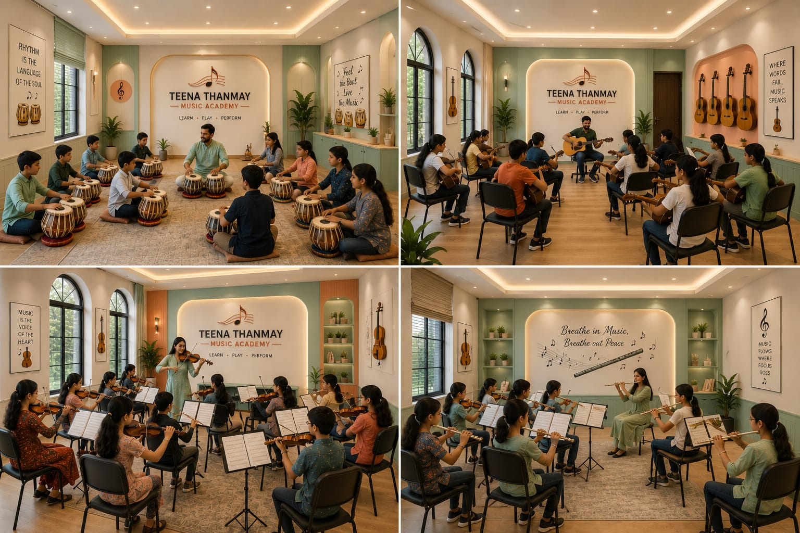

Achievement 01
Student Performance Excellence
Students are encouraged to participate in performances and build confidence through live musical experiences.
At Teena Thanmay Music Academy, we nurture talent, build confidence, and create lifelong connections through the power of music.

Teena Thanmay Music Academy brings students together in a welcoming space where musical learning, creativity and performance grow side by side.

Our academy is designed to give students a comfortable environment for learning instruments, vocal music and ensemble performance. We encourage regular practice, confidence, creativity and a love for music.
With dedicated learning spaces and guidance from experienced musicians, students can learn at their own pace and celebrate every milestone.
Every achievement reflects the dedication of our students, instructors and music community.
Students are encouraged to participate in performances and build confidence through live musical experiences.
A supportive learning community brings together young musicians across Indian classical and contemporary music.
Our academy celebrates progress in technique, rhythm, expression and stage confidence at every level.
It gives soul to the universe, wings to the mind, flight to the imagination and charm and gaiety to life and to everything.